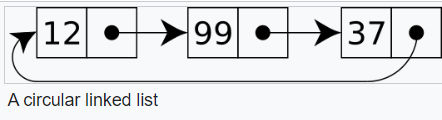

In computer science, a linked list is a linear collection of data elements whose order is not given by their physical placement in memory. Instead, each element points to the next. It is a data structure consisting of a collection of nodes which together represent a sequence. In its most basic form, each node contains data, and a reference (in other words, a link) to the next node in the sequence. This structure allows for efficient insertion or removal of elements from any position in the sequence during iteration. More complex variants add additional links, allowing more efficient insertion or removal of nodes at arbitrary positions. A drawback of linked lists is that data access time is linear in respect to the number of nodes in the list. Because nodes are serially linked, accessing any node requires that the prior node be accessed beforehand (which introduces difficulties in pipelining). Faster access, such as random access, is not feasible. Arrays have better cache locality compared to linked lists.
Linked lists are among the simplest and most common data structures. They can be used to implement several other common abstract data types, including lists, stacks, queues, associative arrays, and S-expressions, though it is not uncommon to implement those data structures directly without using a linked list as the basis.
The principal benefit of a linked list over a conventional array is that the list elements can be easily inserted or removed without reallocation or reorganization of the entire structure because the data items do not need to be stored contiguously in memory or on disk, while restructuring an array at run-time is a much more expensive operation. Linked lists allow insertion and removal of nodes at any point in the list, and allow doing so with a constant number of operations by keeping the link previous to the link being added or removed in memory during list traversal.
On the other hand, since simple linked lists by themselves do not allow random access to the data or any form of efficient indexing, many basic operations—such as obtaining the last node of the list, finding a node that contains a given datum, or locating the place where a new node should be inserted—may require iterating through most or all of the list elements.
Basic Concepts and nomenclature
Each record of a linked list is often called an 'element' or 'node'.
The field of each node that contains the address of the next node is usually called the 'next link' or 'next pointer'. The remaining fields are known as the 'data', 'information', 'value', 'cargo', or 'payload' fields.
The 'head' of a list is its first node. The 'tail' of a list may refer either to the rest of the list after the head, or to the last node in the list. In Lisp and some derived languages, the next node may be called the 'cdr' (pronounced /'kʊd.əɹ/) of the list, while the payload of the head node may be called the 'car'.
Singly linked list
Singly linked lists contain nodes which have a 'value' field as well as 'next' field, which points to the next node in line of nodes. Operations that can be performed on singly linked lists include insertion, deletion and traversal.

Doubly linked list
In a 'doubly linked list', each node contains, besides the next-node link, a second link field pointing to the 'previous' node in the sequence. The two links may be called 'forward('s') and 'backwards', or 'next' and 'prev'('previous').
A technique known as XOR-linking allows a doubly linked list to be implemented using a single link field in each node. However, this technique requires the ability to do bit operations on addresses, and therefore may not be available in some high-level languages.
Many modern operating systems use doubly linked lists to maintain references to active processes, threads, and other dynamic objects. A common strategy for rootkits to evade detection is to unlink themselves from these lists.
Multiply linked list
In a 'multiply linked list', each node contains two or more link fields, each field being used to connect the same set of data arranged in a different order (e.g., by name, by department, by date of birth, etc.). While a doubly linked list can be seen as a special case of multiply linked list, the fact that the two and more orders are opposite to each other leads to simpler and more efficient algorithms, so they are usually treated as a separate case.
Circular linked list
In the last node of a linked list, the link field often contains a null reference, a special value is used to indicate the lack of further nodes. A less common convention is to make it point to the first node of the list; in that case, the list is said to be 'circular' or 'circularly linked'; otherwise, it is said to be 'open' or 'linear'. It is a list where the last node pointer points to the first node (i.e., the "next link" pointer of the last node has the memory address of the first node).
In the case of a circular doubly linked list, the first node also points to the last node of the list.
Tradeoffs
As with most choices in computer programming and design, no method is well suited to all circumstances. A linked list data structure might work well in one case, but cause problems in another. This is a list of some of the common tradeoffs involving linked list structures.
Linked lists vs. dynamic arrays
| Data Structure | Peek | Mutate (insert or delete) at … | Excess Space, Average | ||
|---|---|---|---|---|---|
| Beginning | End | Middle | |||
| Linked List | Θ(n) | Θ(1) | Θ(1), known end element; Θ(n), unknown end element | Θ(n) | Θ(n) |
| Array | Θ(1) | — | — | — | 0 |
| Dynamic Array | Θ(1) | Θ(n) | Θ(1) amortized | Θ(n) | Θ(n) |
| Balanced Tree | Θ(log n) | Θ(log n) | Θ(log n) | Θ(log n) | Θ(n) |
| Random-access List | Θ(log n) | Θ(1) | — | — | Θ(n) |
| Hashed Array Tree | Θ(1) | Θ(n) | Θ(1) amortized | Θ(n) | Θ(√n) |
A dynamic array is a data structure that allocates all elements contiguously in memory, and keeps a count of the current number of elements. If the space reserved for the dynamic array is exceeded, it is reallocated and (possibly) copied, which is an expensive operation.
Moreover, arbitrarily many elements may be inserted into a linked list, limited only by the total memory available; while a dynamic array will eventually fill up its underlying array data structure and will have to reallocate—an expensive operation, one that may not even be possible if memory is fragmented, although the cost of reallocation can be averaged over insertions, and the cost of an insertion due to reallocation would still be amortized O(1). This helps with appending elements at the array's end, but inserting into (or removing from) middle positions still carries prohibitive costs due to data moving to maintain contiguity. An array from which many elements are removed may also have to be resized in order to avoid wasting too much space.
On the other hand, dynamic arrays (as well as fixed-size array data structures) allow constant-time random access, while linked lists allow only sequential access to elements. Singly linked lists, in fact, can be easily traversed in only one direction. This makes linked lists unsuitable for applications where it's useful to look up an element by its index quickly, such as heapsort. Sequential access on arrays and dynamic arrays is also faster than on linked lists on many machines, because they have optimal locality of reference and thus make good use of data caching.